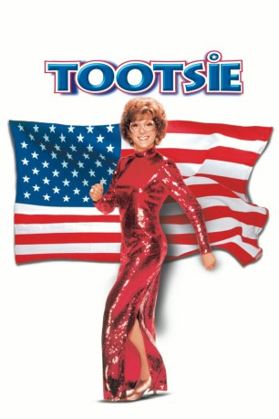

#2045 Tootsie
Auszeichnungen: 1 Oscars gewonnen für 9 Oscars nominiert 3 GoldenGlobes gewonnen 2 BAFTA-Awards gewonnen
 gesehen am 30.09.2015
gesehen am 30.09.2015
 
 IMDB-Wertung: 7.4 / 10
IMDB-Wertung: 7.4 / 10  Metascore: 87
Metascore: 87 
Michael Dorsey ist ein guter aber unbekannter Schauspieler in New York. Unter dem Namen “Dorothy Michaels” bekommt er schließlich eine Rolle in einer großen Fernsehserie und wird als Frau berühmt. Als “Tootsie” ist er bei seinen Kollegen anerkannt und beliebt. Aber nun fangen seine Schwierigkeiten erst richtig an: Er – “Dorothy” – verliebt sich in seine Partnerin Julie! Julies Vater und auch der Hauptdarsteller der Serie verlieben sich wiederum in ihn – “Tootsie”. Wie wird Michael Dorsey “Dorothy Michaels” wieder los?
Jahr: 1982
Dauer: 116 Minuten
FSK:
Land: USA Studio: Columbia PicturesTonspuren: DD5.1 - ,
Untertitel: Deutsch,
Auflösung: 1080p (1920x800) Größe: 10076 MB
Genre: Komödie, Drama, Liebe
Regisseur:  Sydney Pollack
Sydney Pollack
Drehbuch: Larry Gelbart, Murray Schisgal, Don McGuire, Larry Gelbart, Barry Levinson
Soundtrack: Dave Grusin
Darsteller:
 Dustin Hoffman als Michael Dorsey / Dorothy Michaels
Dustin Hoffman als Michael Dorsey / Dorothy Michaels Jessica Lange als Julie
Jessica Lange als Julie Teri Garr als Sandy
Teri Garr als Sandy Dabney Coleman als Ron
Dabney Coleman als Ron Charles Durning als Les
Charles Durning als Les Bill Murray als Jeff
Bill Murray als Jeff Sydney Pollack als George Fields
Sydney Pollack als George Fields George Gaynes als John Van Horn
George Gaynes als John Van Horn Geena Davis als April
Geena Davis als April Ellen Foley als Jacqui
Ellen Foley als Jacqui Lynne Thigpen als Jo
Lynne Thigpen als Jo- Debra Mooney als Mrs. Mallory
- Susan Merson als Page
- Estelle Getty als Middle-Aged Woman
 Christine Ebersole als Linda
Christine Ebersole als Linda- Bernie Pollack als Actor #1
- Mary Donnet als Receptionist
- Greg Gorman als Photographer
 Jim Jansen als Stage Manager #2
Jim Jansen als Stage Manager #2 Tom Mardirosian als Stage Manager
Tom Mardirosian als Stage Manager- Annie Korzen als Autograph Hound
- Carole Holland als Autograph Hound
 John Kapelos als Actor at Party , uncredited
John Kapelos als Actor at Party , uncredited- Gene Shalit als Himself , uncredited
- Andy Warhol als Himself , uncredited
- Doris Belack als Rita
- Peter Gatto als Rick
- Ronald L. Schwary als Phil Weintraub
- Amy Lawrence als Amy
- Kenny Sinclair als Boy
- Michael Ryan als Middle-Aged Man
- Robert D. Wilson als Stage Hand
- James Carruthers als Middle-Aged Man
- Sam Stoneburner als Actor #2
- Marjorie Lovett als Salesgirl
- Willy Switkes als Man at Cab
- Gregory Camillucci als Maitre d'
- Barbara Spiegel als Billie
- Tony Craig als Joel Spector
- Walter Cline als Bartender
- Suzanne von Schaack als Party Girl
- Anne Shropshire als Mrs. Crawley
- Pamela Lincoln als Secretary
- Bernie Passeltiner als Mac
- Mallory Jones als Girl #1
- Patti Cohane als Girl #2
- Murray Schisgal als Party Guest
- Anne Prager als Acting Student
 John Carpenter als First Actor
John Carpenter als First Actor- Bob Levine als Second Actor
Datei: X:\1982\Tootsie (1982, FSK, 1920x800).mkv seit 25.09.2015
Festplatte: HD 1980-1986
 Es gibt insgesamt 31 Filme in der Gruppe '1982'
Es gibt insgesamt 31 Filme in der Gruppe '1982'